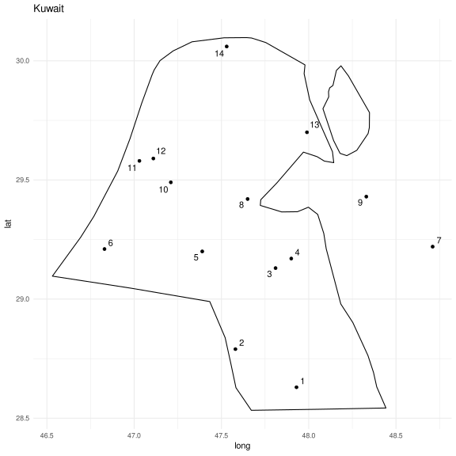
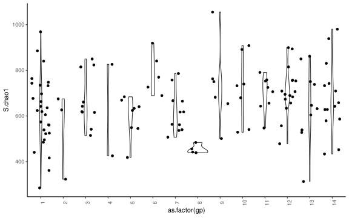

# Activar ambiente en donde esta instalado fastqc
conda activate metagenomica
# ejecutar fastqc para cada muestra en el folder de la estación 1
cd ../outputs
input_dir="../data/Camel_milk_Microbiome_analysis/Fastq_season1"
fastqc $input_dir/*.fastq.gz -o .Procesamiento de datos metagenomicos
Descripción de los datos
Datos de amplicones 16S obtenidos a través de secuenciación de Ilumina de la leche cruda de 133 camellos de tres sitios colectados en 2 estaciones (Rahmeh et al. 2022).
Rahmeh, Rita, Abrar Akbar, Husam Alomirah, Mohamed Kishk, Abdulaziz Al-Ateeqi, Salah Al-Milhm, Anisha Shajan, et al. 2022. “Data on Microbial Diversity of Camel Milk Microbiota Determined by 16S rRNA Gene Sequencing.” Data paper. Data in Brief 45. https://doi.org/10.1016/j.dib.2022.108744.
Evaluación de calidad fastqc
conda activate metagenomica
fastq_dir="../outputs/fastq"
multiqc -d $fastq_dir -o ../outputs/multiqcRevisar resultados
Asignación taxonómica
Kraken2 requiere mucha memoria RAM, tiene que poder mantener la bd en memoria. Descargue la de 16 GB.
Preguntas: ¿Hay diferencias dependiendo de la bd que se utilice?
library(gtools)
files = list.files("../data/Camel_milk_Microbiome_analysis/Fastq_season1", pattern = ".fastq.gz", full.names = T) %>% mixedsort()
for (i in seq(1,length(files),2)){
cat(paste0(files[[i]]," ",files[[i+1]],"\n"))
}# Descargar bd estandar 16 GB (https://benlangmead.github.io/aws-indexes/k2)
wget https://genome-idx.s3.amazonaws.com/kraken/k2_standard_16gb_20221209.tar.gz
kraken2-build --db GREENGENES --special greengenes --threads 10
# Descomprimir
tar -xvzf k2_standard_16gb_20221209.tar.gz
# Correr kraken vs GreenGenes db
input_files=$(cat ../data/Camel_milk_Microbiome_analysis/sample_paths.txt)
while read line
do
name=$(echo $line | cut -d / -f 5 | cut -d \. -f 1 | sed -e 's/_R1//')
kraken2 --use-names --db ../kraken2/GREENGENES --threads 25 --paired $line --output ../outputs/taxonomy_reads/$name.kraken --report ../outputs/taxonomy_reads/$name.report
done < ../data/Camel_milk_Microbiome_analysis/sample_paths.txtGenerar tabla concatenada
kraken_files=$(ls -d ../outputs/taxonomy_reads/*.report)
kraken-biom $kraken_files --fmt json -o ../outputs/taxonomy_reads/samples.biomAnálisis
library("phyloseq")
library("ggplot2")
library("RColorBrewer")
library("patchwork")
library(tidyverse)
library(gtools)
metagenomes <- import_biom("../outputs/taxonomy_reads/samples.biom")
metagenomes@tax_table@.Data <- substring(metagenomes@tax_table@.Data, 4)
colnames(metagenomes@tax_table@.Data)<- c("Kingdom", "Phylum", "Class", "Order", "Family", "Genus", "Species")
# sum of OTUs per sample
data.frame(n = sample_sums(metagenomes)) %>%
ggplot(aes(x = rownames(.), y = n))+
geom_col()+
theme_classic()+
labs(x = "muestras", title = "OTUS por muestra")+
theme(axis.text.x = element_text(angle = 90, size = 5))
Mapa
library(ggrepel)
library(maps)
map <- data.frame(map_data("world", "Kuwait"))
metadata = read.csv("../data/Camel_milk_Microbiome_analysis/metadata.csv", header = T) %>%
select(Sample.Name, Lat_Lon, Group) %>%
separate(col = Lat_Lon,into=c("lat","r","lon","r2"),sep = " ") %>%
select(-starts_with("r")) %>%
group_by(lat,lon) %>%
mutate(gp = cur_group_id())
coord_sum = metadata %>% summarise(gp = unique(gp)) %>% mutate(lat = as.numeric(lat), lon = as.numeric(lon))
ggplot()+
geom_polygon(data = map, aes(x = long, y = lat, group = group), fill = NA, color = "black")+
geom_point(data = coord_sum,aes(x = lon, y = lat), color = "black")+
geom_text_repel(data = coord_sum, aes(x = lon, y = lat,label = gp))+
labs(title = "Kuwait")+
theme_minimal()
Índice de Chao
library(vegan)
diversity = estimateR(t(metagenomes@otu_table@.Data))
dat = data.frame(t(diversity)) %>%
rownames_to_column(var = "Sample.Name") %>%
mutate(Sample.Name = str_remove(Sample.Name, "_R1")) %>%
left_join(metadata, by = "Sample.Name") %>%
mutate(Group = str_remove(Group," ")) %>%
mutate(Group = factor(Group, levels = paste0("Group_",seq(1,16))))
dat %>% ggplot(aes(x = as.factor(gp), y = S.chao1, group = gp ))+
geom_violin()+
geom_jitter()+
theme_classic()+
theme(axis.text.x = element_text(angle = 90))